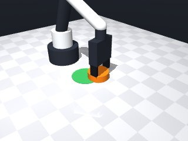
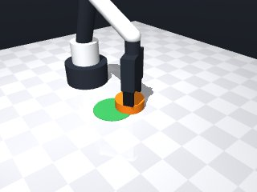
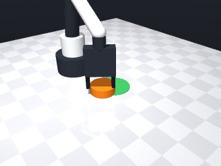
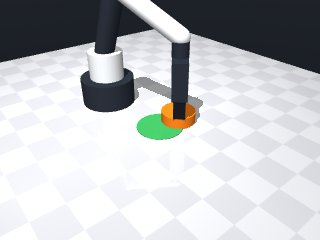
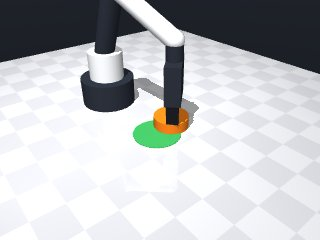
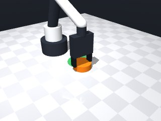
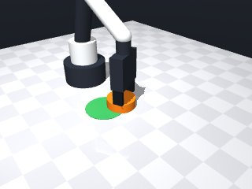
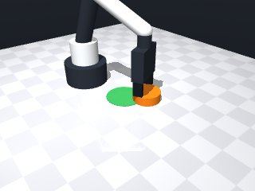

0 demonstrations · reward: gt · 8 practice episodes in 1 rounds
Safety layer: 0 halts, 0 clamps.
| role | model | calls | tokens in | tokens out | USD |
|---|---|---|---|---|---|
| coder | nvidia/nemotron-3-super-120b-a12b | 3 | 5,238 | 3,694 | $0.0049 |
| summarizer | nvidia/Nemotron-3_5-Lightning | 0 | 0 | 0 | $0.0000 |
| compute | local | 97 s | $0.0000 | ||
| total | 3 | 5,238 | 3,694 | $0.0049 |
- Removed any stray characters that could cause a syntax error. - Ensured consistent indentation (4 spaces per level). - Verified that all function calls have correct parentheses and arguments. - Kept the original logic unchanged; only fixed formatting issues.
--- round_0/skill.py +++ round_1/skill.py @@ -0,0 +1,64 @@ +import math + +def run(robot): + """ + Push the orange puck so its centre lies inside the green circular zone. + """ + MAX_RETRIES = 2 + SAFE_Z = 0.02 # clear the puck (centre ~0.01, height 0.02) + APPROACH_OFFSET = 0.02 # distance behind puck to start contact + PUSH_SPEED = 0.05 # slow push for better control + EXTRA_PUSH = 0.005 # small extra to ensure inside target + + for attempt in range(MAX_RETRIES): + obs = robot.observe() + puck = obs["objects"]["puck"] + target = obs["fixtures"]["target"] + + px, py, _ = puck["pos"] + tx, ty, _ = target["pos"] + target_r = target["radius"] + + # vector from puck to target + dx = tx - px + dy = ty - py + dist = math.hypot(dx, dy) + if dist == 0: + # already centred; consider success + return True + + # unit vector pointing from puck to target + ux = dx / dist + uy = dy / dist + + # how far we need to move the puck to get inside the target + needed_push = max(0.0, dist - target_r) + EXTRA_PUSH + + # point behind the puck (opposite direction of push) + behind_x = px - APPROACH_OFFSET * ux + behind_y = py - APPROACH_OFFSET * uy + + try: + # 1. Move to the pushing stance behind the puck + robot.move_to(behind_x, behind_y, SAFE_Z, speed=None) + # 2. Push forward along the puck→target direction + push_dx = ux * (APPROACH_OFFSET + needed_push) + push_dy = uy * (APPROACH_OFFSET + needed_push) + robot.move_by(dx=push_dx, dy=push_dy, dz=0.0, speed=PUSH_SPEED) + except Exception as e: + # If movement fails (e.g., out of reach), try next attempt + robot.log("Move failed:", e) + continue + + # Verify result + obs = robot.observe() + puck_pos = obs["objects"]["puck"]["pos"] + px, py, _ = puck_pos + err = math.hypot(px - tx, py - ty) + if err <= target_r: + robot.log("Success: puck inside target (err=", err, ")") + return True + else: + robot.log("Attempt", attempt + 1, "failed, err=", err) + + return False








import math
def run(robot):
"""
Push the orange puck so its centre lies inside the green circular zone.
"""
MAX_RETRIES = 2
SAFE_Z = 0.02 # clear the puck (centre ~0.01, height 0.02)
APPROACH_OFFSET = 0.02 # distance behind puck to start contact
PUSH_SPEED = 0.05 # slow push for better control
EXTRA_PUSH = 0.005 # small extra to ensure inside target
for attempt in range(MAX_RETRIES):
obs = robot.observe()
puck = obs["objects"]["puck"]
target = obs["fixtures"]["target"]
px, py, _ = puck["pos"]
tx, ty, _ = target["pos"]
target_r = target["radius"]
# vector from puck to target
dx = tx - px
dy = ty - py
dist = math.hypot(dx, dy)
if dist == 0:
# already centred; consider success
return True
# unit vector pointing from puck to target
ux = dx / dist
uy = dy / dist
# how far we need to move the puck to get inside the target
needed_push = max(0.0, dist - target_r) + EXTRA_PUSH
# point behind the puck (opposite direction of push)
behind_x = px - APPROACH_OFFSET * ux
behind_y = py - APPROACH_OFFSET * uy
try:
# 1. Move to the pushing stance behind the puck
robot.move_to(behind_x, behind_y, SAFE_Z, speed=None)
# 2. Push forward along the puck→target direction
push_dx = ux * (APPROACH_OFFSET + needed_push)
push_dy = uy * (APPROACH_OFFSET + needed_push)
robot.move_by(dx=push_dx, dy=push_dy, dz=0.0, speed=PUSH_SPEED)
except Exception as e:
# If movement fails (e.g., out of reach), try next attempt
robot.log("Move failed:", e)
continue
# Verify result
obs = robot.observe()
puck_pos = obs["objects"]["puck"]["pos"]
px, py, _ = puck_pos
err = math.hypot(px - tx, py - ty)
if err <= target_r:
robot.log("Success: puck inside target (err=", err, ")")
return True
else:
robot.log("Attempt", attempt + 1, "failed, err=", err)
return False